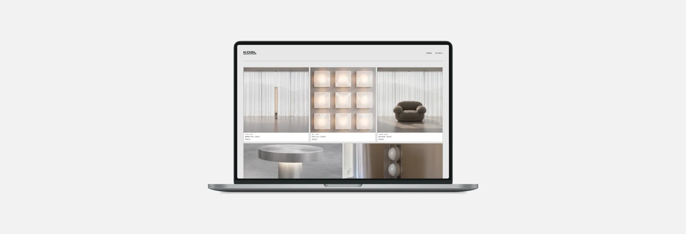
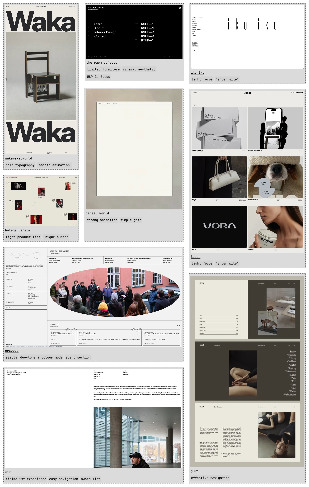
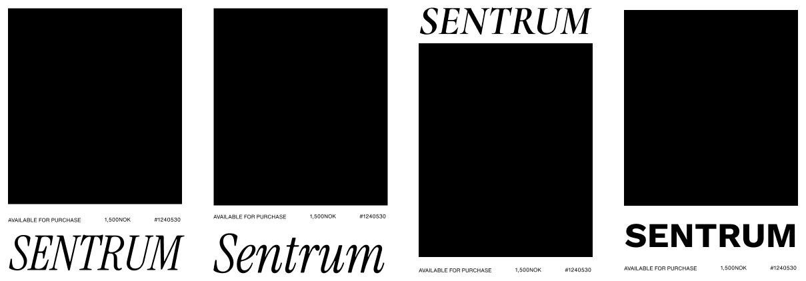
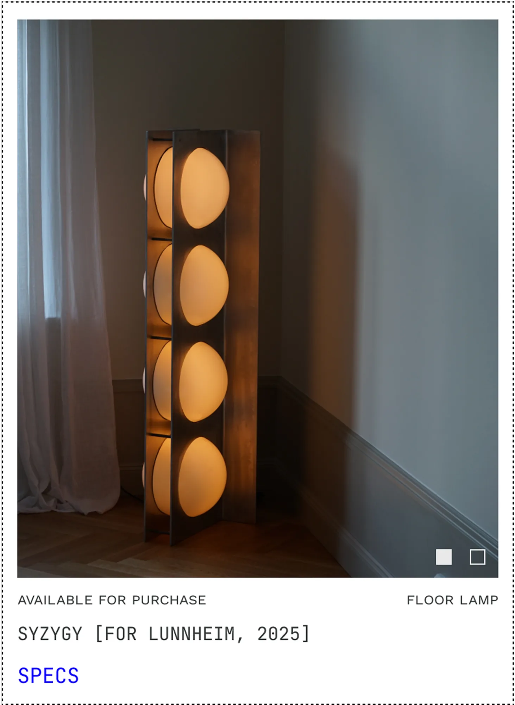
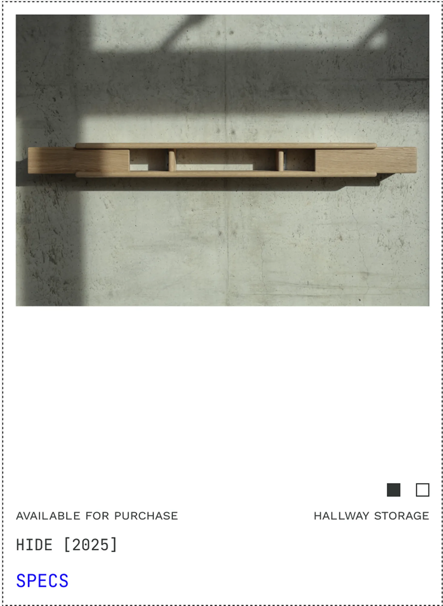
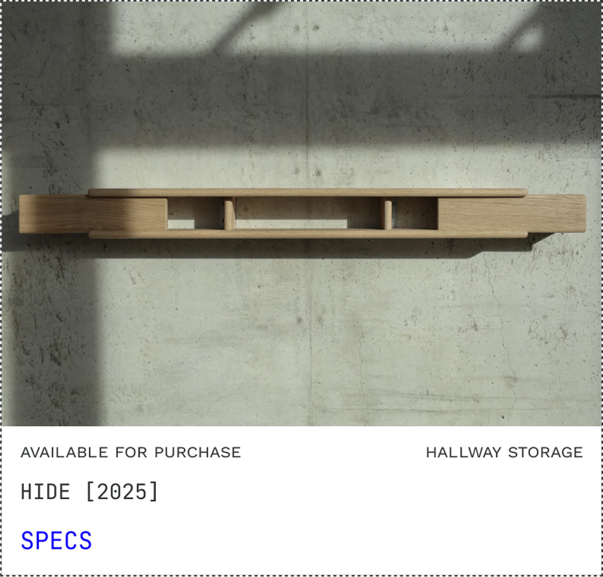
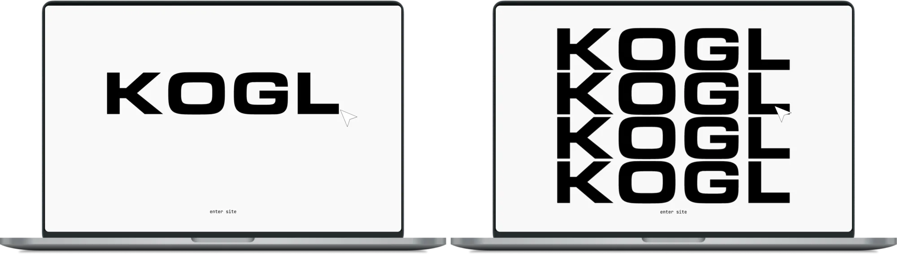
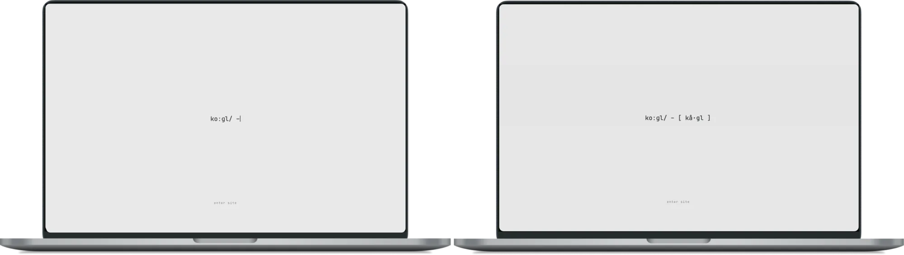
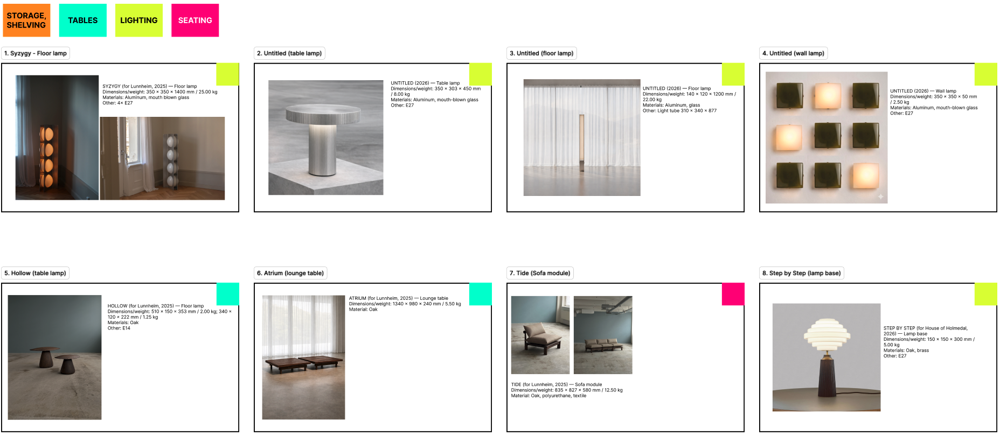

Kogl: Establishing Web Presence
Kogl, an emerging furniture design studio based in Oslo, sought a digital presence that reflected the ambition and quality of its work. While the studio had a growing number of products and an existing outreach strategy, its visual identity lacked a digital presence capable of attracting prospective customers, manufacturers, and design collaborators.

Working with Mary was a seamless experience from start to finish. She took the time to understand our needs and requirements, and came back with a website design that felt tailored to us, our industry and our target audience.
Throughout the project, Mary guided us from the initial brief through the development and finalisation of the website. She made the process feel clear and collaborative, especially with the developer, and her thoughtful approach gave us confidence in the direction we were taking.
The result is a website that reflects who we are and communicates what we do in a clear and engaging way. We really appreciated Mary’s professionalism, creativity and attention to detail, and would happily recommend her to anyone looking for a UX Designer who can bring their vision to life.
Jonas Oppedal and Christian Sandbye, Founders, Kogl
Ask
Design and launch a minimalist product listing site that lays the foundation for an eventual e-commerce website, showcases Kogl's furniture collection, communicates the studio's identity, and positions it as a desirable partner for manufacturers in time for Milan Design Week 2026.
Insights
The client expressed slight frustration that people often struggled with how to pronounce the brand name (Kogl), particularly at international events. As the site needed to launch ahead of Milan Design Week, I created a phonetic animation that acted as a unique landing page, giving every visitor the pronunciation and building slight anticipation before entering the site.
What I learned The first thing a visitor needs isn't the catalogue, it's confidence. Paying attention to the small moments, like answering the smallest question on how to pronounce their name, shows what the Kogl team values: the details.
Contribution
- Led UX, content strategy, and visual design of Kogl's product listing site, from discovery and concept through to design and implementation
- Translated the brand positioning into a structured digital experience, supported by a scalable design system
- Set the typography, spacing, and grid system used across the site
- Worked closely with the developer and client through frequent check-ins to meet a quick turnaround
Tools
Outcome
Designed a minimalist B2C product listing site that places the furniture at the centre of the experience. The site combined streamlined navigation with a curated project index to showcase the studio's growing collection of furniture and lighting designs.
It was designed mobile-first to be responsive. With three cards across on desktop, two on tablet, one on mobile, each image's crop followed the column it landed in. Below, interact to jump between the breakpoints, and the cards re-sort instead of snapping to a new layout.
Media
Here are some key artefacts from the project, with captions explaining each of them.







